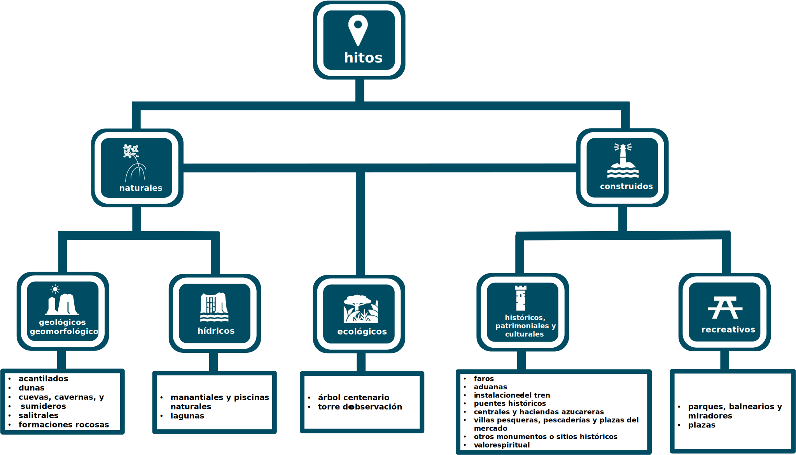

Para propósitos de este proyecto, los hitos son definidos como áreas pequeñas de origen natural o construido con un gran valor natural, de paisaje o escénico, cultural-histórico-patrimonial o recreativo. Se identificaron los hitos dentro de lo que es definido como el componente terrestre de la zona costanera en el documento rector del Programa de Manejo de la Zona Costanera de Puerto Rico. Es decir, “una franja de un kilómetro tierra adentro, así como distancias adicionales necesarias para incluir sistemas naturales clave de la costa”. Además, se incluyeron los hitos en las islas y cayos dentro de las aguas territoriales, lo que según la definición oficial serían parte del componente marino de la zona costanera. Para facilitar el proceso de identificar los hitos, se establecieron dos categorías principales: hitos naturales e hitos construidos. A su vez, estos fueron clasificados en cinco categorías y divididos en subcategorías según sus características:

Este mapa ofrece una oportunidad única de explorar los hitos costeros en Puerto Rico. En el filtro que aparece en la sección superior derecha puede encender o apagar los hitos por categoría.
Este visualizador tiene el propósito de proveer una herramienta al público para explorar y aprender más sobre los hitos ubicados en la costa de Puerto Rico. Como las zonas costeras de Puerto Rico son áreas sensibles a los efectos derivados del cambio climático, los usuarios podrán conocer sobre algunos de estos riesgos a los que están expuestos los distintos hitos, así como otra información valiosa asociada a estos. Por ejemplo, podrá conocer si el hito cuenta con estacionamiento y con acceso para personas con impedimentos, si se encuentra cerca de alguna vereda o algún paseo, y cuán frecuentada es el área donde se ubica.
Como parte del proyecto se consideró la accesibilidad de los hitos, incluyendo su cercanía a rampas para personas con discapacidad. Esta información fue obtenida del inventario del Plan Maestro de Acceso Público a las Costas de Puerto Rico, publicado por el Departamento de Recursos Naturales y Ambientales, en el cual se identifican 33 áreas costeras con acceso a rampa. En términos de accesibilidad a transporte colectivo, debido al límite de acceso a información georreferenciada, esta variable no fue considerada en esta etapa del proyecto. Como parte del proyecto, también se consideró la frecuencia de visitas. Esta información fue obtenida de datos de dispositivos móviles que miden la cantidad de personas que se encuentran en un punto o área de interés en un momento determinado. Con esta información, se calculó un promedio de visitas anuales de las áreas cercanas a los hitos, las cuales fueron divididas en tres categorías: frecuencia alta, frecuencia moderada y frecuencia baja.